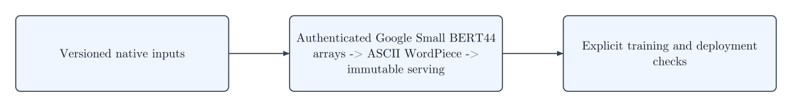
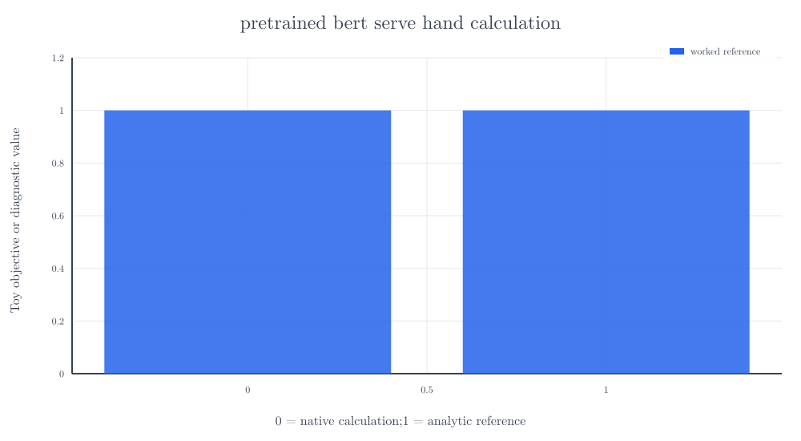
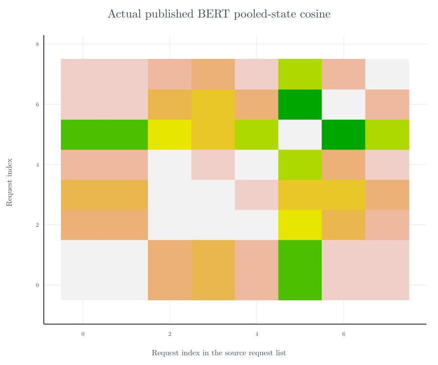

Pretrained Bert Serve
Abstract
Authenticated Google Small BERT44 arrays -> ASCII WordPiece -> immutable serving. The complete native C++ experiment preserves model equations, source seeds, update budgets and explicit fitting/generation loops. Missing data recipes are reconstructed and labelled; original TensorFlow recordings are checked only when genuinely present.
Provenance and scope
The original preparation recipes and most external recordings are absent from the recovered checkout. This report uses datamunge-nn-reconstruction-v1, whose native manifest records the exact public sources, row choices, tokenization and limitations. Reconstructed data validation and native checkpoint restoration do not establish parity with the missing original run. Published Small BERT is the real Google checkpoint, authenticated independently.
Serve the reference text batch
The reference requests are “Hello, world!”, “An unlikely tokenization example.” and “BERT reads both directions.” The serving program packs each request to 16 tokens with the published WordPiece vocabulary and records the pooled and per-token outputs. Additional requests exercise case folding, pair inputs and padding controls.
Follow the computation
Authenticated Google Small BERT44 arrays -> ASCII WordPiece -> immutable serving.
#include <dm/dm.hpp>
int main(){std::filesystem::create_directories("build");dm::graphics::Diagram d(29,1200);dm::graphics::DiagramNodeStyle s;s.width=14;s.height=5;s.font_size=23;d.node("data",{-18,0},"Versioned native inputs",s).node("model",{0,0},"Authenticated Google Small BERT44 arrays -> ASCII WordPiece -> immutable serving",s).node("audit",{18,0},"Explicit training and deployment checks",s).edge("data","model").edge("model","audit").save_svg("build/pretrained_bert_serve_method.svg");}
A calculation before fitting
The vector(3,4) has norm5. Its normalized vector(.6,.8) has self-cosine.6²+.8²=1. A geometric similarity is not a class probability or an external serving-parity score.
#include <dm/dm.hpp>
int main(){namespace n=dm::nn;double computed=n::sum(n::square(n::tensor({3.,4.})/5.)).item(),analytic=1.;if(std::abs(computed-analytic)>2e-6)throw std::runtime_error("hand calculation differs from native primitives");std::print("| native calculation | analytic reference |\n|---:|---:|\n| {:.9f} | {:.9f} |\n",computed,analytic);dm::graphics::RPlot::create().bars(std::vector<double>{0,1},std::vector<double>{computed,analytic},"worked reference",{37,99,235}).ylim(0,std::max(.5,std::max(computed,analytic)*1.2)).x_label("0 = native calculation;1 = analytic reference").y_label("Toy objective or diagnostic value").title("pretrained bert serve hand calculation").size(1000,550).save_svg("build/pretrained_bert_serve_worked.svg");}| native calculation | analytic reference |
|---|---|
| 1.000000000 | 1.000000000 |

Prepare reproducible inputs
Native acquisition authenticates source bytes. Preparation calls no Python, upstream checkout or external training service. Every substituted task is described in its manifest; training-derived checkpoints are produced by editable programs below.
#include <dm/dm.hpp>
int main(){auto root=dm::datasets::prepare_example_data("nn-completion-assets");std::print("Versioned recipe root: {}\n",root);}Versioned recipe root: /home/jordan/.cache/datamunge/datasets/nn-completion-assets
Complete editable experiment
Historical comments in the preserved source describe the original experiment; the versioned reconstruction manifest above describes the active inputs. Objectives, optimizer ownership, update schedules, sampling and search remain here. Source finite-difference, padding, causal/label-independence, checkpoint and immutability controls remain active. Weak held-out outcomes are retained.
#include <dm/dm.hpp>
namespace recovered_checkpoints {
inline std::filesystem::path Model(const std::string&name){auto p=std::filesystem::path(dm::datasets::data_home())/"nn-completion-checkpoints/models"/name;std::filesystem::create_directories(p);return p;}
}
// Published Small BERT SavedModel: actual C++ serving and independent audit.
// CMD: just run-nn pretrained_bert_serve
// Native adaptation: import actual published weights exported as NPZ by the
// source example, reconstruct its encoder/pooler equations, and compare all
// five outputs. SavedModel/GraphDef loading is outside this plan's scope.
// Options: text=ASCII; arrays=PATH selects the exported44-tensor NPZ.
// Editable workflow support: pretrained_bert.hpp
// Editable workflow support: tf_replay.hpp
// Small helpers the 4.2 sequence-task ports share for working with tflow's
// recorded runs: named-array maps (tflow's `std::map<std::string, tf::Tensor>`
// batches), row selection, exact/approximate comparisons, loading TF's
// initial_arrays.npz into a ParameterStore and reading history.tsv columns.
//
// A tflow run directory (tflow's output/models/<name>) holds initial_arrays.npz,
// first_batch.npz, initial_gradients.npz, history.tsv and model_arrays.npz.
// Replaying the run from TF's own initial weights with the same batch order
// (nn::BatchOrder reproduces tflow's) and the same optimizer checks the port
// numerically, independently of the random initialisation.
// Editable workflow support: checks.hpp
// Small runtime checks used by the executable nn examples. They stay on in
// Release builds and make the example exit nonzero on failure, so `just
// run-all-nn` doubles as a regression test against the recorded TF numbers.
// Editable workflow support: runtime.hpp
// Bounded demonstrations by default; opt into convergence experiments explicitly.
namespace example_runtime {
inline bool Full() {
const char* value = std::getenv("DATAMUNGE_EXAMPLES_FULL");
return value && std::string(value) == "1";
}
template <typename T> T Limit(T requested, T quick_limit) {
return Full() ? requested : std::min(requested, quick_limit);
}
inline void Describe() {
if (!Full())
std::cout << "Quick demonstration: bounded training; convergence metrics require "
"DATAMUNGE_EXAMPLES_FULL=1.\n";
}
} // namespace example_runtime
namespace check {
inline void Require(bool condition, const std::string& message) {
if (!condition) throw std::runtime_error(message);
}
// A short demonstration checks execution, derivatives and persistence; reaching
// a published accuracy/return requires the separately requested full schedule.
inline void TrainingQuality(bool condition, const std::string& message) {
if (example_runtime::Full()) Require(condition, message);
else std::cout << " full-training quality check deferred: " << message << '\n';
}
inline void Near(double actual, double expected, double tolerance, const std::string& message) {
if (!std::isfinite(actual) || !std::isfinite(expected) || std::abs(actual - expected) > tolerance)
throw std::runtime_error(message + ": got " + std::to_string(actual) + ", expected " + std::to_string(expected));
}
/// Expects `f` to throw; returns the message.
template <typename F>
std::string Throws(F&& f, const std::string& message) {
try {
f();
} catch (const std::exception& e) {
return e.what();
}
throw std::runtime_error(message + ": expected an exception");
}
} // namespace check
inline void Header(const std::string& title) {
const std::size_t pad = title.size() < 60 ? 60 - title.size() : 0;
std::cout << "\n== " << title << " " << std::string(pad, '=') << "\n";
}
// Editable workflow support: paths.hpp
// Where the nn example ports read datasets and write their outputs.
//
// Datasets: $DATAMUNGE_DATA_DIR, or the user's cache. Public datasets are
// prepared by the example data loaders when first needed.
// Outputs (checkpoints, histories, fixtures): $DATAMUNGE_OUTPUT_DIR, or
// output/nn relative to the working directory (`just run-nn` runs from the
// repository root). Both are created on demand by the caller.
// Editable workflow support: dataset_assets.hpp
namespace dataset_assets{inline std::string DataRoot(){return dm::datasets::data_home();}}
namespace dataset_assets {inline void EnsureSaliency(const std::string& directory){dm::datasets::prepare_example_data("mnist-assets",std::filesystem::path(directory).parent_path().string());}}
namespace dataset_assets {
inline dm::nn::ImageDataset LoadCifar10(const std::string&directory,const std::string&split){dm::datasets::fetch("cifar10",std::filesystem::path(directory).parent_path().string());return dm::nn::load_cifar10(directory,split);}
}
namespace paths {
inline std::filesystem::path DataRoot() {
return dataset_assets::DataRoot();
}
/// DataRoot() / name, e.g. Dataset("mnist").
inline std::filesystem::path Dataset(const std::string& name) { if(name=="cifar10"||name=="character_rnn")return DataRoot()/name;return std::filesystem::path(dm::datasets::prepare_example_data("nn-completion-assets"))/name; }
inline std::filesystem::path OutputRoot(){return std::filesystem::absolute("build/nn-completion");}
/// OutputRoot() / relative, created as a directory.
inline std::filesystem::path OutputDir(const std::string& relative) {
auto dir = OutputRoot() / relative;
std::filesystem::create_directories(dir);
return dir;
}
} // namespace paths
namespace replay {
namespace nn = datamunge::nn;
using nn::Tensor;
using Map = std::map<std::string, Tensor>;
/// tflow's recorded output directory for an example (its output/models/<name>).
inline std::filesystem::path TfModels(const std::string& name) {
return paths::DataRoot().parent_path() / "models" / name;
}
inline Tensor Get(const nn::NamedTensors& arrays, const std::string& key) {
for (const auto& [name, t] : arrays)
if (name == key) return t;
throw std::runtime_error("missing array " + key);
}
inline Map ToMap(const nn::NamedTensors& arrays) { return {arrays.begin(), arrays.end()}; }
inline nn::NamedTensors ToNamed(const Map& m) { return {m.begin(), m.end()}; }
/// Rows `rows` (axis 0) of every array.
inline Map Rows(const Map& m, const std::vector<std::int64_t>& rows) {
Map out;
for (const auto& [k, v] : m) out[k] = nn::take_rows(v, rows);
return out;
}
/// {key: arrays["<split>_<key>"]} for each key.
inline Map Split(const nn::NamedTensors& arrays, const std::string& split, const std::vector<std::string>& keys) {
Map out;
for (const auto& k : keys) out[k] = Get(arrays, split + "_" + k);
return out;
}
inline double MaxAbsDiff(const Tensor& a, const Tensor& b) {
const auto x = a.to_vector<double>(), y = b.to_vector<double>();
check::Require(x.size() == y.size(), "compared tensors have the same size");
double m = 0;
for (std::size_t i = 0; i < x.size(); ++i) m = std::max(m, std::abs(x[i] - y[i]));
return m;
}
/// Bit-identical values (dtype and shape included).
inline bool SameBits(const Tensor& a, const Tensor& b) {
if (a.dtype() != b.dtype() || a.shape() != b.shape()) return false;
auto same = [](const auto& x, const auto& y) {
return x.size() == y.size() && (x.empty() || std::memcmp(x.data(), y.data(), x.size() * sizeof(x[0])) == 0);
};
switch (a.dtype()) {
case nn::DType::Float32: return same(a.to_vector<float>(), b.to_vector<float>());
case nn::DType::Float64: return same(a.to_vector<double>(), b.to_vector<double>());
case nn::DType::Int32: return same(a.to_vector<std::int32_t>(), b.to_vector<std::int32_t>());
default: return same(a.to_vector<std::int64_t>(), b.to_vector<std::int64_t>());
}
}
inline bool SameBits(const Map& a, const Map& b) {
if (a.size() != b.size()) return false;
for (const auto& [k, v] : a)
if (!b.count(k) || !SameBits(v, b.at(k))) return false;
return true;
}
/// Copies of every parameter, by name.
inline Map Arrays(const nn::ParameterStore& p) {
Map out;
for (const auto& name : p.names()) out[name] = p.at(name).detach().clone();
return out;
}
/// Gradients aligned with p.names(), by name.
inline Map Named(const nn::ParameterStore& p, const std::vector<Tensor>& g) {
Map out;
for (std::size_t i = 0; i < g.size(); ++i) out[p.names()[i]] = g[i].defined() ? g[i].detach() : nn::zeros_like(p.parameters()[i]).detach();
return out;
}
/// Overwrites every parameter of `p` from an .npz (e.g. TF's initial_arrays.npz),
/// which must hold exactly p's names.
inline void LoadInto(nn::ParameterStore& p, const std::filesystem::path& file) {
const auto arrays = nn::load_npz(file.string());
check::Require(arrays.size() == p.size(), "array file covers exactly the model's parameters: " + file.string());
for (const auto& [name, value] : arrays) {
check::Require(p.contains(name), "array " + name + " is a model parameter");
p.set(name, nn::cast(value, p.at(name).dtype()));
}
}
/// max |a[k] - b[k]| over the keys of `a` (all must exist in `b`).
inline double MaxDiff(const Map& a, const Map& b) {
double m = 0;
for (const auto& [k, v] : a) {
check::Require(b.count(k) > 0, "reference has array " + k);
m = std::max(m, MaxAbsDiff(v, b.at(k)));
}
return m;
}
inline double MaxDiff(const Map& a, const std::filesystem::path& file) { return MaxDiff(a, ToMap(nn::load_npz(file.string()))); }
/// Column `column` (0-based) of a tab-separated history file with a header line.
inline std::vector<double> History(const std::filesystem::path& file, int column = 1) {
std::ifstream in(file);
std::string line;
std::vector<double> out;
std::getline(in, line);
while (std::getline(in, line)) {
std::stringstream ss(line);
std::string cell;
for (int c = 0; c <= column && std::getline(ss, cell, '\t'); ++c)
if (c == column) out.push_back(std::stod(cell));
}
return out;
}
inline nn::OptimizerConfig Adam() {
nn::OptimizerConfig c;
c.kind = nn::OptimizerKind::Adam;
return c;
}
/// Copies `files` from `from` to `to` when present.
inline void CopyAssets(const std::filesystem::path& from, const std::filesystem::path& to,
const std::vector<std::string>& files) {
for (const auto& f : files)
if (std::filesystem::exists(from / f))
std::filesystem::copy_file(from / f, to / f, std::filesystem::copy_options::overwrite_existing);
}
} // namespace replay
// Editable workflow support: wordpiece.hpp
namespace wordpiece {using namespace dm::nn::models::wordpiece;}
namespace pretrained_bert {using namespace dm::nn::models::pretrained_bert;}
namespace nn = datamunge::nn;
namespace {
using A = pretrained_bert::A;
using Model = pretrained_bert::Model;
using Tokenizer = wordpiece::AsciiWordPiece;
void Save(const std::filesystem::path& file, const A& a) {
nn::save_npz(file.string(), replay::ToNamed(a));
}
A Batch(const std::vector<Tokenizer::Packed>& rows) {
check::Require(!rows.empty(), "nonempty WordPiece batch");
std::vector<nn::Tensor> ids, mask, types;
for (const auto& row : rows) {
ids.push_back(row.ids);
mask.push_back(row.mask);
types.push_back(row.types);
}
return {
{"input_word_ids", nn::concat(ids, 0)},
{"input_mask", nn::concat(mask, 0)},
{"input_type_ids", nn::concat(types, 0)}};
}
A Copy(const A& b) {
A out;
for (const auto& [k, v] : b)
out[k] = v.clone();
return out;
}
double Delta(const A& a, const A& b) {
double e = 0;
for (const auto& [k, v] : a)
e = std::max(e, replay::MaxAbsDiff(v, b.at(k)));
return e;
}
double ValidDelta(const A& a, const A& b, const nn::Tensor& mask) {
double error = 0;
auto m = mask.to_vector<int>();
int n = mask.size(0), t = mask.size(1);
for (const auto& [key, v] : a) {
auto w = b.at(key);
auto x = v.to_vector<float>(), y = w.to_vector<float>();
for (int row = 0; row < n; ++row)
for (int j = 0; j < (v.dim() == 2 ? 1 : t); ++j)
if (v.dim() == 2 || m[row * t + j])
for (int d = 0; d < 128; ++d) {
int i = v.dim() == 2 ? row * 128 + d : (row * t + j) * 128 + d;
int k = v.dim() == 2 ? row * 128 + d : (row * w.size(1) + j) * 128 + d;
error = std::max(error, double(std::abs(x[i] - y[k])));
}
}
return error;
}
void Edit(A& b, const std::string& key, const std::function<void(std::vector<int>&)>& fn) {
auto x = b.at(key).to_vector<int>();
fn(x);
b[key] = nn::from_vector(x, b.at(key).shape());
}
void Run(const std::filesystem::path& arrays, const std::string& request) {
auto root = paths::OutputDir("models/pretrained_bert_serve"),
tf = paths::Dataset("pretrained_bert_serve");
replay::CopyAssets(tf, root, {"vocab.txt", "source_manifest.json"});
Tokenizer tokenizer(root / "vocab.txt");
Model model(arrays);
auto frozen = model.Arrays();
Save(root / "pretrained_arrays.npz", frozen);
check::Require(
tokenizer.Tokenize("Hello TensorFlow!") == std::vector<int>({7592, 23435, 12314, 999}),
"official WordPiece fixture");
check::Require(
tokenizer.Tokenize("HELLO tensorflow!") == tokenizer.Tokenize("Hello TensorFlow!"),
"uncased tokenizer");
check::Require(
tokenizer.Tokenize(std::string(101, 'q')) == std::vector<int>({100}),
"whole unknown token for >100ASCIIcharacters");
check::Require(
tokenizer.Tokenize("hello\tworld\n!") == std::vector<int>({7592, 2088, 999}),
"BasicTokenizer whitespace");
const std::vector<std::string> names{
"hello", "hello_case", "cat", "cat_rephrase", "weather", "pair", "empty", "wordpieces"},
first{
"Hello TensorFlow!",
"HELLO tensorflow!",
"The cat sits on the mat.",
"A cat is sitting on a mat.",
"Heavy rain is expected tomorrow.",
"The cat sits on the mat.",
"",
"unaffable tokenization."};
std::vector<Tokenizer::Packed> packed;
for (size_t i = 0; i < first.size(); ++i)
packed.push_back(
tokenizer.Pack(first[i], i == 5 ? "A cat is sitting on a mat." : "", i == 5, 32));
auto batch = Batch(packed), out = model.Run(batch);
Save(root / "inputs.npz", batch);
Save(root / "outputs.npz", out);
std::ofstream cases(root / "cases.tsv");
cases << "row\tname\tfirst\tsecond\n";
for (int i = 0; i < 8; ++i)
cases << i << '\t' << names[i] << '\t' << first[i] << '\t'
<< (i == 5 ? "A cat is sitting on a mat." : "") << '\n';
A fixtures;
for (const auto& [name, p] : std::vector<std::pair<std::string, Tokenizer::Packed>>{
{"pair", tokenizer.Pack("hello tensorflow", "goodbye tensorflow", true, 16)},
{"truncate_single",
tokenizer.Pack("hello hello hello hello hello hello hello hello", {}, false, 8)},
{"truncate_pair",
tokenizer.Pack(
"hello hello hello hello hello",
"goodbye goodbye goodbye goodbye goodbye",
true,
8)},
{"unknown", tokenizer.Pack(std::string(101, 'q'), {}, false, 8)},
{"empty", tokenizer.Pack("", {}, false, 8)},
{"punctuation", tokenizer.Pack("Can't, stop.", {}, false, 16)}}) {
fixtures[name + "_ids"] = p.ids;
fixtures[name + "_mask"] = p.mask;
fixtures[name + "_types"] = p.types;
}
Save(root / "tokenizer_fixtures.npz", fixtures);
// Integer tokenizer fixtures are compared separately, without float casting.
if(std::filesystem::exists(tf/"tokenizer_fixtures.npz")) {
auto expected_fixtures = replay::ToMap(nn::load_npz((tf / "tokenizer_fixtures.npz").string()));
check::Require(replay::SameBits(fixtures, expected_fixtures), "source tokenizer packing exact");
}else std::cout<<"Original TF tokenizer recording absent; fixed official-ID fixtures and native invariants are checked.\n";
double batch_error = 0;
for (int row = 0; row < 8; ++row)
batch_error = std::max(
batch_error, Delta(replay::Rows(out, {row}), model.Run(replay::Rows(batch, {row}))));
check::Require(batch_error < 2e-5, "batch/single serving parity");
check::Near(Delta(out, model.Run(batch)), 0, 0, "repeated serving deterministic");
auto padded = Copy(batch);
auto mask = batch.at("input_mask").to_vector<int>();
for (auto key : {"input_word_ids", "input_type_ids"})
Edit(padded, key, [&](auto& x) {
for (int i = 0; i < 256; ++i)
if (!mask[i])
x[i] = std::string(key) == "input_word_ids" ? 1000 + i % 100 : 1;
});
auto padout = model.Run(padded);
double mask_error = ValidDelta(out, padout, batch.at("input_mask")),
masked_effect = Delta(out, padout);
check::Require(mask_error < 2e-5, "masked keys cannot affect visible states/pooled output");
check::Require(masked_effect > .01, "masked QUERY states not forced zero");
Save(root / "masked_inputs.npz", padded);
Save(root / "masked_outputs.npz", padout);
auto changed = Copy(batch);
Edit(changed, "input_word_ids", [&](auto& x) { x[2 * 32 + 2] = tokenizer.lookup.at("dog"); });
auto changedout = model.Run(changed);
double token_effect = Delta(out, changedout);
check::Require(token_effect > .01, "visible word changes pretrained outputs");
Save(root / "changed_inputs.npz", changed);
Save(root / "changed_outputs.npz", changedout);
auto types = Copy(batch);
types["input_type_ids"] = nn::zeros({8, 32}, nn::DType::Int32);
auto typeout = model.Run(types);
double type_effect = Delta(out, typeout);
check::Require(type_effect > .01, "sentence-pair type embeddings matter");
Save(root / "types_inputs.npz", types);
Save(root / "types_outputs.npz", typeout);
auto hole = Copy(batch);
Edit(hole, "input_mask", [](auto& x) { x[2 * 32 + 2] = 0; });
auto holeout = model.Run(hole);
double hole_effect = Delta(out, holeout);
check::Require(hole_effect > .01, "removing visible attention key changes context");
Save(root / "hole_inputs.npz", hole);
Save(root / "hole_outputs.npz", holeout);
auto short_batch = Batch({tokenizer.Pack("Hello TensorFlow!", {}, false, 8)}),
short_out = model.Run(short_batch);
double width_error = ValidDelta(short_out, replay::Rows(out, {0}), short_batch.at("input_mask"));
check::Require(width_error < 2e-5, "dynamic width preserves valid states");
Save(root / "short_inputs.npz", short_batch);
Save(root / "short_outputs.npz", short_out);
int guards = 0;
auto reject = [&](auto fn) {
bool rejected = false;
try {
fn();
} catch (const std::exception&) {
rejected = true;
}
check::Require(rejected, "invalid serving request rejected");
++guards;
};
reject([&] { tokenizer.Tokenize("caf\xc3\xa9"); });
reject([&] { tokenizer.Pack("a", "b", true, 2); });
reject([&] { tokenizer.Pack("a", {}, false, 513); });
for (auto field : {"input_word_ids", "input_mask", "input_type_ids"}) {
auto bad = Copy(batch);
Edit(bad, field, [&](auto& x) { x[0] = std::string(field) == "input_word_ids" ? 30522 : 2; });
reject([&] { model.Run(bad); });
}
auto bad = Copy(batch);
bad["input_word_ids"] = nn::zeros({8, 32});
reject([&] { model.Run(bad); });
bad = Copy(batch);
bad["input_type_ids"] = nn::zeros({8, 31}, nn::DType::Int32);
reject([&] { model.Run(bad); });
bad = Copy(batch);
bad["input_mask"] = nn::zeros({8, 32}, nn::DType::Int32);
reject([&] { model.Run(bad); });
bad = Copy(batch);
bad.erase("input_mask");
reject([&] { model.Run(bad); });
Model reloaded(arrays);
check::Near(Delta(out, reloaded.Run(batch)), 0, 0, "fresh NPZ reload exact");
check::Require(replay::SameBits(frozen, reloaded.Arrays()), "fresh NPZ weights identical");
double tf_error = 0;int tf_compared=0;
for (auto prefix : {"", "masked_", "changed_", "types_", "hole_", "short_"}) {
if(!std::filesystem::exists(tf/(std::string(prefix)+"outputs.npz"))) continue;
auto inputs =
replay::ToMap(nn::load_npz((root / (std::string(prefix) + "inputs.npz")).string()));
auto result = model.Run(inputs);
auto expected =
replay::ToMap(nn::load_npz((tf / (std::string(prefix) + "outputs.npz")).string()));
++tf_compared;double e = Delta(result, expected);
tf_error = std::max(tf_error, e);
check::Near(e, 0, 2e-5, "published TF outputs " + std::string(prefix));
}
auto start = std::chrono::steady_clock::now();
for (int i = 0; i < 10; ++i)
model.Run(batch);
double milliseconds =
std::chrono::duration<double, std::milli>(std::chrono::steady_clock::now() - start).count() /
10;
if (!request.empty()) {
auto input = Batch({tokenizer.Pack(request)}), result = model.Run(input);
Save(root / "request_inputs.npz", input);
Save(root / "request_outputs.npz", result);
std::ofstream(root / "request.txt") << request;
std::cout << "request pooled first4:";
auto pooled = result.at("bert_encoder").to_vector<float>();
for (int i = 0; i < 4; ++i)
std::cout << ' ' << pooled[i];
std::cout << '\n';
}
const auto reference_batch = Batch({
tokenizer.Pack("Hello, world!", {}, false, 16),
tokenizer.Pack("An unlikely tokenization example.", {}, false, 16),
tokenizer.Pack("BERT reads both directions.", {}, false, 16)});
const auto reference_output = model.Run(reference_batch);
A reference_record = reference_batch;
reference_record.emplace("sequence_output", reference_output.at("bert_encoder_2"));
reference_record.emplace("pooled_output", reference_output.at("bert_encoder"));
Save(root / "reference_requests.npz", reference_record);
std::cout << "Served three reference requests at width 16.\n";
check::Require(replay::SameBits(frozen, model.Arrays()), "all44pretrained variables immutable");
std::ofstream metrics(root / "metrics.json");
metrics.precision(17);
metrics << "{\"stored_variables\":44,\"stored_parameters\":4433210,\"encoder_pooler_parameters\":"
"4385920,\"unused_mlm_parameters\":47290,\"requests_in_batch\":8,\"signature_"
"outputs\":5,\"guard_checks\":"
<< guards << ",\"batch_error\":" << batch_error
<< ",\"masked_valid_error\":" << mask_error
<< ",\"masked_query_effect\":" << masked_effect
<< ",\"visible_token_effect\":" << token_effect << ",\"type_effect\":" << type_effect
<< ",\"hole_mask_effect\":" << hole_effect << ",\"dynamic_width_error\":" << width_error
<< ",\"reload_error\":0,\"external_tf_compared\":" << tf_compared << ",\"tf_output_error\":" << (tf_compared?std::to_string(tf_error):"null")
<< ",\"warm_batch8_milliseconds\":" << milliseconds << "}\n";
std::cout << "Published Small BERT NPZ:44vars/4433210params;8requests/10guards; TF recordings="
<< tf_compared << " TF max=" << (tf_compared?std::to_string(tf_error):"unavailable") << " batch=" << batch_error << " maskedValid=" << mask_error
<< " dynamicWidth=" << width_error << "; immutable/reload/tokenization/serving PASS\n";
}
} // namespace
int main(int argc, char** argv) {
try {
nn::set_num_threads(2);
auto arrays = paths::Dataset("pretrained_bert_serve") / "pretrained_arrays.npz";
std::string text = "Hello TensorFlow!";
for (int i = 1; i < argc; ++i) {
std::string a = argv[i];
if (a.rfind("text=", 0) == 0)
text = a.substr(5);
else if (a.rfind("arrays=", 0) == 0)
arrays = a.substr(7);
else
throw std::invalid_argument("text=ASCII arrays=PATH");
}
Run(arrays, text);
return 0;
} catch (const std::exception& e) {
std::cerr << e.what() << '\n';
return 1;
}
}
Original TF tokenizer recording absent; fixed official-ID fixtures and native invariants are checked. request pooled first4: -0.999992 0.10396 -0.996508 -0.0317283 Served three reference requests at width 16. Published Small BERT NPZ:44vars/4433210params;8requests/10guards; TF recordings=0 TF max=unavailable batch=0 maskedValid=0 dynamicWidth=0; immutable/reload/tokenization/serving PASS
Inspect the actual saved results
The figures below read actual saved outputs from this run. Native graph previews appear above the complete program. Reconstructed-task results retain the source budgets and are not reported as original benchmark scores.
Actual published embedding geometry
Cosines use the eight saved pooled states. Request indices follow the source request list above. This pooling geometry is a serving diagnostic, not a claim of sentence-similarity training.
#include <dm/dm.hpp>
int main(){namespace n=dm::nn;auto arrays=n::load_npz("build/nn-completion/models/pretrained_bert_serve/outputs.npz");auto it=std::find_if(arrays.begin(),arrays.end(),[](const auto&a){return a.first=="bert_encoder";});if(it==arrays.end())throw std::runtime_error("actual published pooled states missing");auto h=it->second;auto unit=h/n::sqrt(n::sum(n::square(h),{1},true));auto cosine=n::matmul(unit,unit,false,true);auto values=cosine.to_vector<double>();std::vector<std::vector<double>>z(8,std::vector<double>(8));std::vector<double>x(8);std::iota(x.begin(),x.end(),0.);for(int i=0;i<8;++i)for(int j=0;j<8;++j)z[i][j]=values[i*8+j];dm::graphics::RPlot::create().image(x,x,z).title("Actual published BERT pooled-state cosine").x_label("Request index in the source request list").y_label("Request index").size(900,750).save_svg("build/pretrained_bert_serve_cosine.svg");}